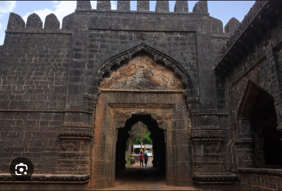
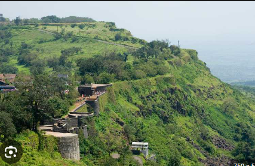
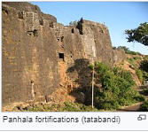
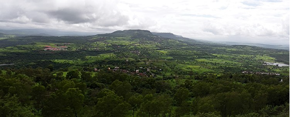

Panhala fort (also known as Panhalgad and Panhalla (literally "the home of serpents")) , is located in Panhala, 20 kilometres northwest of Kolhapur in Maharashtra, India. It is strategically located looking over a pass in the Sahyadri mountain range which was a major trade route from Bijapur in the interior of Maharashtra to the coastal areas. Due to its strategic location, it was the centre of several skrmishes in the Deccan involving the Marathas, the Mughals and the British the grand son's of chhatrapati shivaji maharaj East India Company, the most notable being the Battle of Pavan Khind. Here, the queen regent of Kolhapur, Tarabai Ranisaheb, spent her formative years. Several parts of the fort and the structures within are still intact. It is also called as the 'Fort of Snakes' as it is zigzagged in shape.

Panahala fort was built between 1178 and 1209 CE, one of 15 forts (others including Bavda, Bhudargad, Satara, and Vishalgad) built by the Shilahara ruler Bhoja II. It is said that aphorism Kahaan Raja Bhoj, kahan Gangu Teli is associated with this fort. A copper plate found in Satara shows that Raja Bhoja held court at Panhala from 1191–1192 CE. About 1209–10, Bhoja Raja was defeated by Singhana (1209–1247), the most powerful of the Devgiri Yadavas, and the fort subsequently passed into the hands of the Yadavas. Apparently it was not well looked after and it passed through several local chiefs. In 1376 inscriptions record the settlement of Nabhapur to the south-east of the fort.

Fortifications and bastions More than 7 km of fortifications (Tatabandi) define the approximately triangular zone of Panhala fort. The walls are protected for long sections by steep escarpments, reinforced by a parapet with slit holes. The remaining sections have 5–9 m (16–30 ft) high ramparts without a parapet, strengthened by round bastions the most notable of which is Rajdindi.
MAJOR FEATURES

The palace of Tarabai, arguably the fort's most famous resident, is still intact. It is now used to house a school, several government offices and a boys' hostel.[19] there are two buildings for food storage. The rest of the fort is in ruins though the structures within the fort are frequented by tourists who visit Panhala town- a major hill station. It has been declared as a protected monument by the government. The Masai Pathar behind Panhala fort was chosen as an alternative location to shoot Padmaavat film.